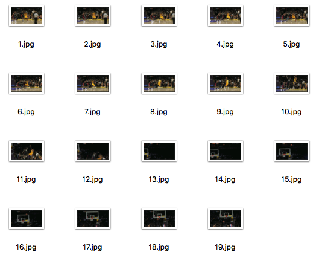
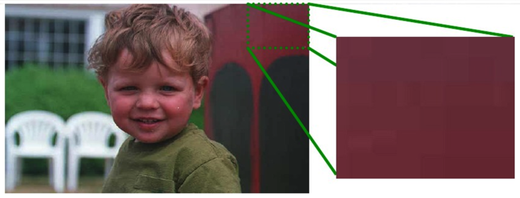
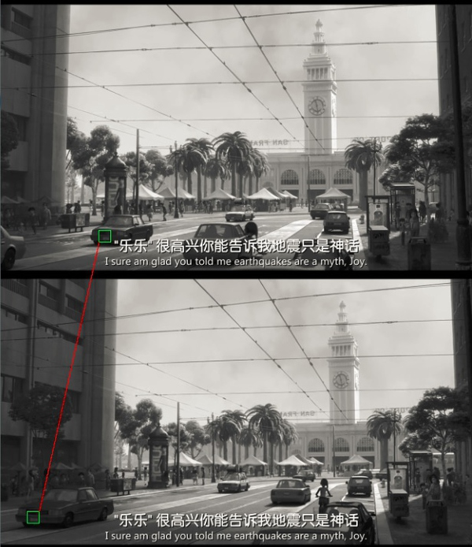
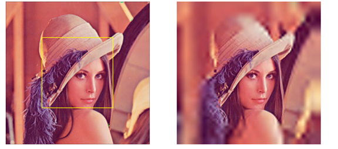
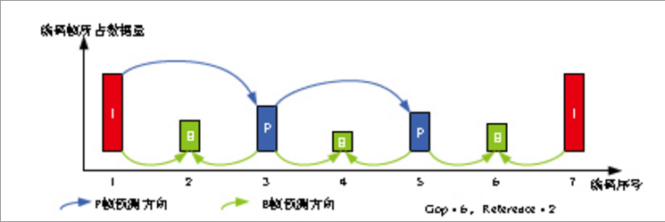
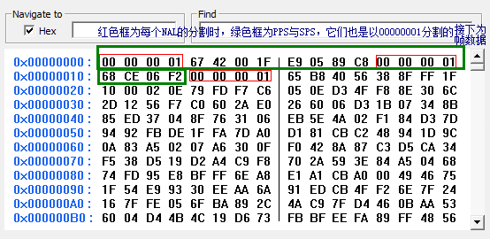

视频编码介绍
为什么进行压缩编码?
- 视频是由一帧帧的图像组成(见实例)
- 比如一张Gif图片其实就可以被分解成若干张单独的图片
- 分别出的图片
- 未经压缩的视频的数据量巨大
- 比如:录音一分钟视频, 需要多大的空间来保存了?
- 1> 为了不让用户感受到卡顿效果, 1秒钟之内至少需要16帧画面(正常开发通常会采集30帧)
- 2> 假如该视频是一个1280*720分辨率的视频(正常情况下会比这个大很多)
- 结果:128072016*60≈843.75M
- 如果帧率更高、分辨率更高、加上音频，那么一分钟的视频是多大呢？
- 结论：
- 不经过压缩编码的视频，根本没办法保存，更何况网络中的传输
- 视频录制完成后，要先编码，再传输，在解码，再播放（重现）
为什么视频可以压缩编码？
- 存在冗余信息
- 空间冗余：图像相邻像素之间有较强的相关性
- 时间冗余：视频序列的相邻图像之间内容相似
- 视觉冗余：人的视觉系统对某些细节不敏感
- 等等冗余信息
- 空间冗余
- 空间冗余是指在同一张图像中，有很多像素点表示的信息是完全一样的
- 如果对每一个像素进行单独的存储，必然会非常浪费空间，也完全没有必要
- 如图：
- 时间冗余
- 时间冗余是指多张图像之间，有非常多的相关性，由于一些小运动造成了细小差别
- 如果对每张图像进行单独的像素存储，在下一张图片中又出现了相同的。那么相当于很多像素都存储了多份，必然会非常浪费空间，也是完全没有必要的
- 如图：
- 视觉冗余
- 人类视觉系统HVS
- 对高频信息不敏感
- 对高对比度更敏感
- 对亮度信息比色度信息更敏感
- 对运动的信息更敏感
- 数字视频系统的设计应该考虑HVS的特点：
- 丢弃高频信息，只编码低频信息
- 提高边缘信息的主观质量
- 降低色度的解析度
- 对感兴趣区域（Region of Interesting，ROI）进行特殊处理
- 如图：
- 人类视觉系统HVS
- 结论：
- 经过一系列的去处冗余信息，可以大大的降低视频的数据量
- 更利于视频的保存、传输
- 去除冗余信息的过程，我们就称之为压缩编码
压缩编码的标准
- 为什么需要视频压缩编码标准
- 目前，我们已经非常清楚，视频在存储&传输过程中，存在非常多的冗余信息，我们需要去除这些冗余信息
- 但是，如果每个人按照自己的方式去编码，那么当我们需要还原原始数据时，很难知道对方是如何编码的
- 比如：某主播在斗鱼采用iPhone手机进行直播，手机录制了主播大量的画面，为了便于传输，需要程序对视频进行压缩编码，但是他想当然的按照自己的某种算法进行了压缩，并且将数据传递给了服务器，服务器拿到数据之后，进行数据分发给了各个客户端：Android、iOS、Win、Web、Mac等等客户端，这个时候每个客户端需要知道对方的压缩算法，才能将数据进行还原，但是因为当时客户端是想当然的就行压缩编码的，并且也不能保证他的方式效率，而且有一点误差可能会造成画面无法还原的后果。
- 因此，视频编码必须制定一个大家都认同的标准
- 标准化组织：
- ITU：International Telecommunications Union VECG：Video Coding Experts Group（国际电传视讯联盟）
- ISO：International Standards Organization MPEG：Motion Picture Experts Group（国际标准组织机构）
- H.26X系列（由ITU[国际电传视讯联盟]主导）
- H.261：主要在老的视频会议和视频电话产品中使用
- H.263：主要用在视频会议、视频电话和网络视频上
- H.264：H.264/MPEG-4第十部分，或称AVC（Advanced Video Coding，高级视频编码），是一种视频压缩标准，一种被广泛使用的高精度视频的录制、压缩和发布格式。
- H.265：高效率视频编码（High Efficiency Video Coding，简称HEVC）是一种视频压缩标准，H.264/MPEG-4 AVC的继任者。可支持4K分辨率甚至到超高画质电视，最高分辨率可达到8192×4320（8K分辨率），这是目前发展的趋势，尚未有大众化编码软件出现
- MPEG系列（由ISO[国际标准组织机构]下属的MPEG[运动图象专家组]开发）
- MPEG-1第二部分：MPEG-1第二部分主要使用在VCD上，有些在线视频也使用这种格式
- MPEG-2第二部分（MPEG-2第二部分等同于H.262，使用在DVD、SVCD和大多数数字视频广播系统中
- MPEG-4第二部分（MPEG-4第二部分标准可以使用在网络传输、广播和媒体存储上。 *
- 其他系列：
- AMV · AVS · Bink · RealVideo · Theora · VC-1 · VP3 · VP6 · VP7 · VP8 · VP9 · WMV
编码的常见流程
- 在进行当前信号编码时，编码器首先会产生对当前信号做预测的信号，称作预测信号（predicted signal）
- 预测的方式：
- 时间上的预测（interprediction），亦即使用先前帧的信号做预测
- 空间上的预测 （intra prediction），亦即使用同一张帧之中相邻像素的信号做预测
- 得到预测信号后，编码器会将当前信号与预测信号相减得到残余信号（residual signal），并只对残余信号进行编码
- 如此一来，可以去除一部份时间上或是空间上的冗余信息
- 编码器并不会直接对残余信号进行编码，而是先将残余信号经过变换（通常为离散余弦变换）然后量化以进一步去除空间上和感知上的冗余信息
- 量化后得到的量化系数会再透过熵编码，去除统计上的冗余信息
目前应用最广泛的H.264（AVC）
- H264是新一代的编码标准，以高压缩高质量和支持多种网络的流媒体传输著称
- 个人理解：
- 在相邻几幅图像画面中，一般有差别的像素只有10%以内的点,亮度差值变化不超过2%，而色度差值的变化只有1%以内
- 所以对于一段变化不大图像画面，我们可以先编码出一个完整的图像帧A，随后的B帧就不编码全部图像，只写入与A帧的差别，这样B帧的大小就只有完整帧的1/10或更小！
- B帧之后的C帧如果变化不大，我们可以继续以参考B的方式编码C帧，这样循环下去。
- 这段图像我们称为一个序列：序列就是有相同特点的一段数据
- 当某个图像与之前的图像变化很大，无法参考前面的帧来生成，那我们就结束上一个序列，开始下一段序列
- 也就是对这个图像生成一个完整帧A1，随后的图像就参考A1生成，只写入与A1的差别内容。
- 在H264协议里定义了三种帧
- I帧：完整编码的帧叫I帧
- P帧：参考之前的I帧生成的只包含差异部分编码的帧叫P帧
- B帧：参考前后的帧编码的帧叫B帧
- H264采用的核心算法是帧内压缩和帧间压缩
- 帧内压缩是生成I帧的算法
- 帧间压缩是生成B帧和P帧的算法
H264的压缩方法:
- 分组:把几帧图像分为一组(GOP，也就是一个序列),为防止运动变化,帧数不宜取多
- 定义帧:将每组内各帧图像定义为三种类型,即I帧、B帧和P帧;
- 预测帧:以I帧做为基础帧,以I帧预测P帧,再由I帧和P帧预测B帧;
- 数据传输:最后将I帧数据与预测的差值信息进行存储和传输。
序列(GOP)
- 在H264中图像以序列为单位进行组织，一个序列是一段图像编码后的数据流。
- 一个序列的第一个图像叫做 IDR 图像（立即刷新图像），IDR 图像都是 I 帧图像。
- H.264 引入 IDR 图像是为了解码的重同步，当解码器解码到 IDR 图像时，立即将参考帧队列清空，将已解码的数据全部输出或抛弃，重新查找参数集，开始一个新的序列。
- 这样，如果前一个序列出现重大错误，在这里可以获得重新同步的机会。
- IDR图像之后的图像永远不会使用IDR之前的图像的数据来解码。
- 一个序列就是一段内容差异不太大的图像编码后生成的一串数据流
- 当运动变化比较少时，一个序列可以很长，因为运动变化少就代表图像画面的内容变动很小，所以就可以编一个I帧，然后一直P帧、B帧了。
- 当运动变化多时，可能一个序列就比较短了，比如就包含一个I帧和3、4个P帧。
- 在视频编码序列中，GOP即Group of picture（图像组），指两个I帧之间的距离
- I帧、P帧、B帧的预测方向
- I帧、P帧、B帧实际顺序&编码后顺序

H264分层设计
- 分层设计
- H264算法在概念上分为两层：视频编码层（VCL：Video Coding Layer）负责高效的视频内容表示，网络提取层（NAL：Network Abstraction Layer）负责以网络所要求的恰当的方式对数据进行打包和传送。
- 这样，高效编码和网络友好性分别由VCL和NAL分别完成
- 而之前我们学习的编码方式，都是属于VCL层
- NAL设计目的：
- 根据不同的网络把数据打包成相应的格式，将VCL产生的比特字符串适配到各种各样的网络和多元环境中。
- NAL的封装方式：
- NAL是将每一帧数据写入到一个NAL单元中，进行传输或存储的
- NALU分为NAL头和NAL体
- NALU头通常为00 00 00 01，作为一个新的NALU的起始标识
- NALU体封装着VCL编码后的信息或者其他信息
- 封装过程：
- I帧、P帧、B帧都是被封装成一个或者多个NALU进行传输或者存储的
- I帧开始之前也有非VCL的NAL单元，用于保存其他信息，比如：PPS、SPS
- PPS（Picture Parameter Sets）：图像参数集
- SPS（Sequence Parameter Set）：序列参数集
- 在实际的H264数据帧中，往往帧前面带有00 00 00 01 或 00 00 01分隔符，一般来说编码器编出的首帧数据为PPS与SPS，接着为I帧，后续是B帧、P帧等数据
编码方式
- 编码的方式有两种：
- 硬编码：使用非CPU进行编码，如显卡GPU、专用的DSP、FPGA、ASIC芯片等
- 软编码：使用CPU进行编码，软编码通常使用：ffmpeg+x264
- ffmpeg：是一套开源的、用于对音视频进行编码&解码&转化计算机程序
- x264：x264是一种免费的、开源的、具有更优秀算法的H.264/MPEG-4 AVC视频压缩编码方式
- 对比：（没有对比就没有伤害）
- 软编码：实现直接、简单，参数调整方便，升级易，但CPU负载重，性能较硬编码低
- 性能高，对CPU没有压力，但是对其他硬件要求较高（如GPU等）
- iOS中编码方式：
- 在iOS8之前，苹果并没有开放硬编码的接口，所以只能采用ffpeng+x624进行软编码
- 在iOS8之后，苹果开放了接口，并且封装了VideoToolBox&AudioToolbox两个框架，分别用于对视频&音频进行硬编码